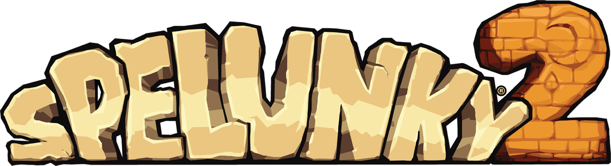
노예의 인공 지능을 만들기 위한 문제들, 도전과 해결
Javier Moya Nájera (eglomer)
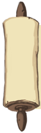
A little introduction to chaos: 문제에 대한 간단한 소개
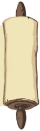
Spelunky 2가 출시된 지 4년이 지났고, 이를 기념하기 위해 가장 사랑받거나 미움을 받거나 혹은 애증의 관계였던 캐릭터 중 하나인 노예에 대한 후기를 쓰는 것보다 더 좋은 방법은 없을 것 같습니다. 샷건으로 모험을 위협하는 사악한 원시인으로부터 여러분을 구하거나 돌을 던져서 용암 속으로 보낼 수 있는 사랑스러운 대머리를 소개합니다.
저는 커뮤니티에서 "eglomer"로 더 잘 알려진 Javier Moya Nájera이고 이 게임의 메인 프로그래머 중 한 명이었습니다. 무엇보다도 저는 노예의 인공지능(AI) 구현을 담당했는데요, 이 문서에서는 이 인공지능을 만들 때 직면했던 문제와 도전, 그리고 그 문제에 대한 해결책을 검토해 보겠습니다. 물론 모든 문제를 일일이 다루면 시간이 너무 많이 걸리므로 가장 중요하거나 관련성이 높은 문제만 집중적으로 다루겠습니다.
역주: 노예의 공식 명칭은 일꾼이지만, 한국 스펠렁키 커뮤니티에서 주로 노예로 불려 노예로 통일했습니다(원문: Hired Hands, HH). 특별한 의미는 없습니다.

위험 감지 기능을 테스트하기 위해 노예를 죽이려고 합니다.
Andy Hull는 Spelunky HD의 수석 프로그래머로 오리지널 노예의 프로그래밍을 담당했습니다. 제가 보기에 Spelunky HD의 노예는 재미있고 게임 내에서 매우 잘 작동했기 때문에 처음에는 박쥐나 거미와 같은 다른 개체에 대해 했던 것처럼 똑같이 작업했습니다: 첫 번째 게임의 로직을 두 번째 게임에 그대로 이식하고, 다른 기술을 Spelunky 2의 특성에 맞게 조정했습니다. 결과는... "흥미롭다"고 말할 수 있습니다.
노예는 새로운 입력 시스템에서 제대로 작동하지 않아서 대부분의 경우 움직이지 못하고 가장자리에 매달려 있는 경우가 많았습니다. 또한 액체, 발판, 뒷레이어 등 경로 찾기 시스템이 이해하지 못하는 새로운 요소도 많았습니다. 또한 물리 엔진이 완전히 동일하지 않았기 때문에 거리, 속도 등이 달라졌고, 물론 귀여운 두더지 같은 새로운 몬스터나 파워팩 같은 물체도 등장했습니다.
변경 사항이 많았기 때문에 이전 게임의 코드를 새 게임에 적용하여 수정하거나, 경로 찾기 알고리즘의 기반만 남겨두고 처음부터 다시 시작하여 모든 적, 오브젝트, 블럭 유형 등을 추가하는 두 가지 옵션이 있었습니다.
결국 저희는 두 번째 옵션을 선택했고, 좌절스럽지만 재미있는 모험이 시작되었습니다.
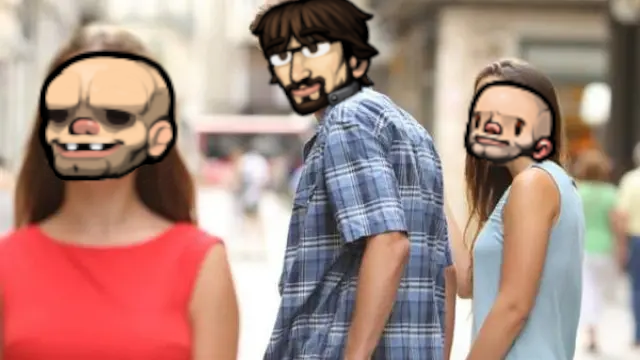
Spelunky HD의 노예 미안!
The gravity of gravity: 중력의 무게
선택을 내린 다음에는 노예가 가만히 서서 캐릭터의 경로를 계산하는 경로 찾기 시스템 작업을 시작했습니다. 이 작업을 통해 다양한 유형의 바닥, 사다리 등을 추가하여 노예가 단계적으로 경로를 제대로 계산할 수 있도록 했습니다.
노예가 레벨의 입구에서 생성되고 레벨은 일반적으로 아래쪽을 향하기 때문에(출구 문은 레벨의 맨 아래에 있습니다), 모든 것이 잘 진행되고 있었는데 거꾸로 아래에서 위로의 이동을 시도하니 정말 즐거운 중력 문제가 있었습니다.
경로 찾기에 사용하는 알고리즘은 A* 알고리즘입니다. 이 알고리즘은 2D 게임이 평면 모션 게임(클래식 젤다처럼 캐릭터를 앞뒤로 움직이는)일 때는 비교적 간단하지만, Spelunky 2는 수평 모션 게임이기 때문에 중력이 있어 높은 곳에 도달하려면 점프가 필요합니다. 하지만 점프를 어떻게 계산할까요? 캐릭터가 얼마나 멀리 도달할 수 있을까요? 어떤 점프가 가능하거나 불가능한 것으로 간주되나요? 그리고 스프링 슈즈와 같은 파워업도 장착했다면? 아레나 모드에서는 이러한 파워업과 망토와 같은 물체를 인간과 봇 모두 장착할 수 있다는 사실을 잊어서는 안 됩니다.
그래서 저는 평균적인 플레이어 실력으로 직접 점프를 테스트하고 다양한 특성과 상황에서 점프할 때의 속도, 거리, 결과를 메모했습니다. 이 모든 과정을 통해 가능한 것과 불가능한 것에 대한 일반적인 공식을 도출할 수 있었고, 이는 노예들을 위한 점프를 점진적으로 구현하는 데 기초가 되었습니다.
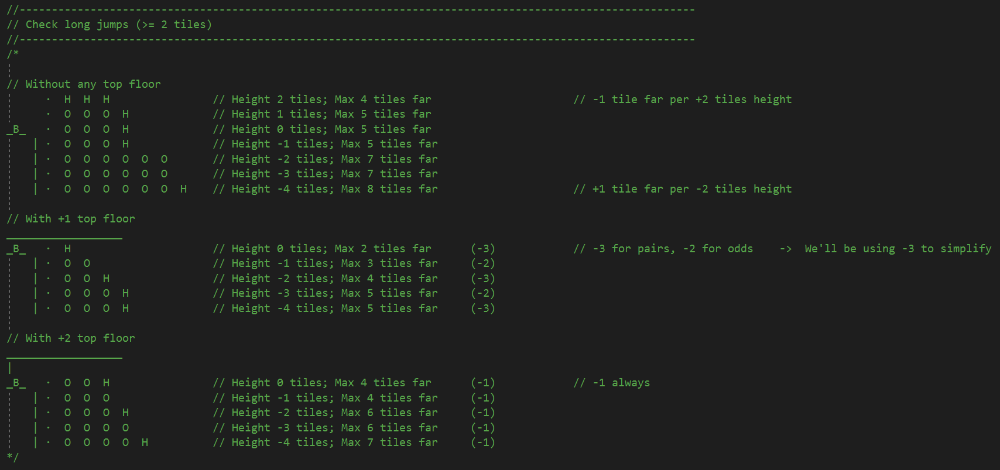
첫 테스트를 통해 얻은 설계
돌이켜보면 이 모든 것이 물리 엔진에 달려 있었기 때문에 최선의 방법은 아니었을지도 모릅니다. 어떤 이유로든 물리 시스템(이동 속도 또는 점프 강도)에 변화가 있었다면 전체 점프 계산이 엉망이 되었을 수도 있지만 다행히 그렇진 않았습니다.
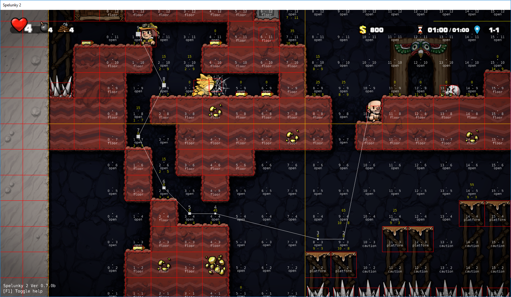
플레이어에게 가기 위한 길을 찾는 노예
First steps, first falls: 추락사고
그리고 마침내 결전의 순간이 찾아왔습니다! 경로 찾기가 충분히 성숙해지자 앞서 말했듯이 캐릭터에 도달하는 것 외에는 다른 목표 없이 그저 오리처럼 저를 따라다니던 노예의 AI을 활성화했습니다. 그런 다음 노예의 온몸의 뼈마디가 다 부러졌습니다.
"한 번 올라간 것은 반드시 내려온다"는 뉴턴의 중력 법칙은 Spelunky 2에서와 마찬가지로 실생활에서도 유효합니다. 문제는 노예의 AI가 낙하를 고려하지 않았기 때문에 첫 번째 테스트에서 뛰어내린다는 것은 일반적으로 체공 시간이 충분히 크면 노예가 먼저 바닥에 부딪혀 그에 상응하는 피해를 입는다는 것을 의미했습니다.
이를 해결하기 위해 위험 낙하 감지 시스템을 추가하여 특정 속도 임계값을 초과하거나 바로 아래에 위험한 지면(예: 스파이크나 용암)이 있으면 경로 탐색이 가장 가까운 안전한 칸(붙잡을 수 있는 가장자리나 로프, 낙하 속도를 재설정할 중간 지면...)를 찾아서 그곳으로 노예의 목표를 재설정하여 낙하에 의한 피해를 피할 수 있도록 했습니다.
역주: 칸의 원문은 노드Node입니다. 이 글에서는 격자에서의 한칸을 생각하시면 됩니다. 다소 의역되었습니다.
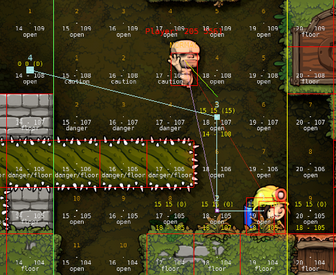
노예가 가시 위로 점프하며 안전한 착지 칸을 계산중입니다.
이를 해결한 후에, 기본적인 노예의 움직임은 완성되었습니다.

노예가 움직이는 플레이어를 따라가고 있습니다.
One grid to rule them all: 노예를 관리하는 격자 영역 - 그리드
노예들이 움직이기 시작하자 작업하기 편해졌습니다. 조금씩 어려운 점프를 하거나 함정을 피하고 적을 물리치는 모습을 보는 것은 흥미로웠지만, 몇 가지 한계와 문제도 나타나기 시작했습니다. 하지만 이러한 문제를 설명하기 전에 게임에서 사용되는 경로 찾기 시스템이 어떻게 작동하는지 더 잘 이해해야 합니다.
앞서 말했듯이 저희 알고리즘은 기본적으로 그리드(격자로 된 영역)의 각 칸을 분석하여 그 안에 무엇이 있는지 파악하고 이를 기반으로 AI가 어떤 방식으로든 반응하도록 하는 그리드인 A*를 사용합니다. 위의 스크린샷에서 칸의 유형을 확인할 수 있습니다 (open은 빈 칸, floor는 바닥 블럭이 있는 칸, danger는 위험한 칸). 말하자면, 이 그리드는 AI의 눈과 같아서 그 안에 무엇이 있는지 파악하고 이를 바탕으로 진행 방법을 결정합니다.
노예의 그리드는 Spelunky HD에서 이어받은 것으로 다음 특징을 가지고 있습니다:
• 각 노예는 자체 그리드를 가지고 있으며 노예와 함께 이동하여 노예가 항상 그리드의 중심에 위치하도록 했습니다.
• 방 두 개 크기였는데, 이는 그리드가 커지면 속도가 느려지는 Xbox 버전의 기술적 한계로 인해 앤디가 허용 가능한 최소한의 크기로 줄여야 했습니다(데스매치 레벨은 항상 방 한 개 크기였고, 노예가 그리드의 중앙에 있고 그리드가 함께 움직이기 때문에 방 두 개 크기로 만들면 노예가 레벨의 가장자리에 있으면 그리드가 반대쪽 가장자리까지 닿을 정도로 커져서 AI가 항상 전체 레벨에서 일어나는 모든 상황을 알 수 있게 됩니다).
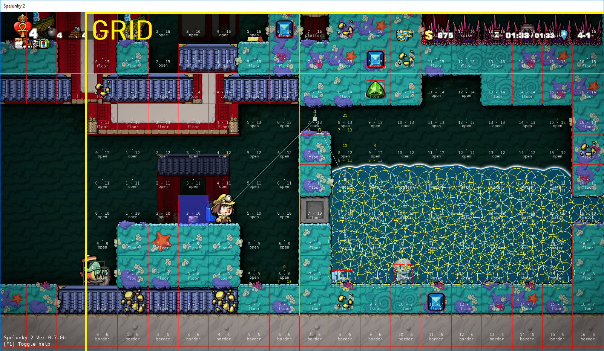
그리드의 예. 노예가 그 중앙에 있다.
이로 인해 몇 가지 문제가 발생했는데, 그 중 첫 번째는 크기와 관련된 문제였습니다. 그리드의 크기가 제한되어 있기 때문에 AI는 그 공간 밖에 있는 것을 '볼' 수 없었기 때문에 쉽게 접근할 수 있는 곳으로 가는 길을 찾지 못하거나 계속 왔다 갔다 하는 경우가 있었습니다 (예: 물체를 감지하고 물체까지의 경로를 계산한 후 이 경로가 물체에서 멀리 이동해야 함을 의미하므로 그리드가 움직이다가 물체가시야에서 벗어나면 물체를 향해 가는 것을 중단하고 초기 위치로 돌아가 다시 감지하고 무한 반복되는 경우).
이 제한은 제가 매우 중요하다고 생각한 부분에도 영향을 미쳤는데, 바로 길을 잃지 않고 플레이어를 따라갈 수 있다는 점이었습니다. 이 정도 크기의 그리드에서는 플레이어가 레벨을 계속 진행하다가 어떤 이유로 기절하면 깨어났을 때 플레이어가 이미 시야에서 사라졌기 때문에 어디로 가야 할지 모르거나, 플레이어가 위나 아래 바닥에 있는 것을 감지하고 길을 찾지 못해 헤매다가 앞서 말한 앞뒤로 돌아가는 문제가 발생하기 쉬웠습니다.
처음에는 플레이어 추적 시스템으로 이 문제를 해결했는데, 각 HH는 각 방에서 자신이 팔로우하는 플레이어의 마지막 위치를 저장했습니다. 이렇게 하면 플레이어에게 도달할 때까지 항상 시야 내에 있는 마지막 위치를 따라갈 수 있었습니다.
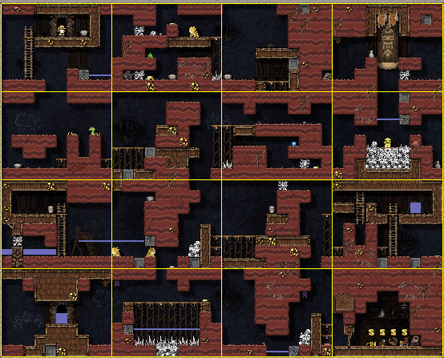
노예가 플레이어의 흔적을 따라 방들을 넘나들고 있다.
처음에는 이 솔루션이 꽤 잘 작동했지만, 예를 들어 마지막 위치가 공중에 있고 노예가 아래 바닥으로 떨어져서 해당 칸에 도달하려는 노예가 차단되는 등 도달할 수 없는 위치가 있는 경우가 있어 문제가 없지는 않았습니다. 결국 이 솔루션은 결국 폐기되었습니다.
마지막으로, 각 노예가 자체 그리드를 가지고 있으면 여러 노예가 있는 경우 노예들이 같은 공간을 공유하는 경우 그 공간에 있는 칸의 처리를 중복하여 반복 처리해야 한다는 것을 의미했습니다. 특히 특정 조건에서 게임 성능에 영향을 미칠 수 있는 액체 감지와 관련된 경우 이 처리는 상대적으로 비용이 많이 들 수 있었습니다.

칸에 액체가 있는 경우의 예
이러한 모든 문제를 고려하여 모든 노예들이 사용하고 레벨 전체를 차지하는 공유 그리드를 설계하여 실제 경로 찾기 프로세스를 두 부분으로 분리하여 경로 찾기와 칸의 처리로 분리했습니다.
• 노예들은 칸의 처리를 중단하고 경로 계산만 대신하여 공유 그리드에서 데이터를 가져옵니다.
• 공유 그리드는 칸의 업데이트 관리를 담당하여 중복 처리를 제거했습니다.
이 새로운 공유 그리드 덕분에 개별 그리드 사용 시 발견된 모든 문제를 해결할 수 있었지만, 다음 섹션에서 살펴보겠지만 몇 가지 불편한 점도 있었습니다.

레벨 전체를 차지하는 공유 그리드
몇 개의 작은 그리드를 몇 프레임마다 레벨의 모든 칸을 검사하는 거대한 크기의 공유 그리드로 변경했습니다. 예상대로 성능 문제가 발생했기 때문에 효율적으로 작동할 수 있는 방법을 찾아야 했습니다. 그렇지 않았다면 모든 노력이 헛수고가 되었을 것입니다.
해결책은 공유 그리드를 여러 그룹으로 나누는 것이었습니다. 게임에 이미 '방'이라는 개념이 있다는 점을 활용하여 이를 구분선으로 사용했기 때문에 이제 전체 레벨을 업데이트하는 대신 공유 그리드에서 방을 업데이트하고 물론 동시에 모두 업데이트하지는 않았습니다. 저는 다이아몬드 모양의 우선순위 시스템을 추가하여 노예가 X 방에 있으면 해당 방과 위, 아래, 왼쪽, 오른쪽에 인접한 방이 가장 높은 우선순위를 가지도록 하고 나머지 방은 노예로부터 얼마나 떨어져 있는지에 따라 우선순위가 정해지도록 했습니다. 각 프레임에서 업데이트할 수 있는 방의 수에 제한을 두어 성능에 심각한 영향을 주지 않으면서 공유 그리드를 유지할 수 있는 완벽한 솔루션을 제공했습니다.
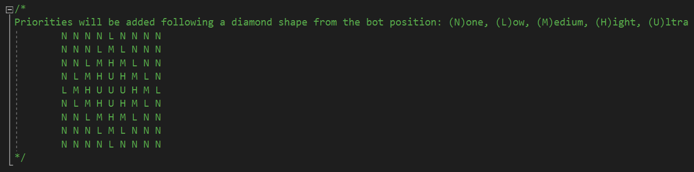
우선순위 시스템이 어떻게 작동할지에 대한 설계

우선순위 시스템의 동작
그럼에도 불구하고 여전히 걱정스러운 점이 있었는데, 그것은 바로 노예들의 길 찾기 자체였습니다. 공유 그리드를 만들면서 경로 탐색 시간이 단축되긴 했지만, 많은 노예들이 한데 모이면 시간이 늘어나는 것이 사실이었죠. 조사해 보니 문제는 노예들이 경로 업데이트를 몇 프레임에 한 번으로 제한했지만 같은 프레임에서 모두 일치했기 때문에 경로를 업데이트하지 않는 프레임이 N개가 있었고, N+1 프레임에서 갑자기 모두 계산을 시작하면서 게임에서 딸꾹질이 발생한다는 것이었습니다.
다시 말하지만, Spelunky HD에서와 비슷한 방식으로 작업 부하를 여러 프레임으로 나누는 것으로 충분했습니다. 따라서 같은 프레임에서 경로를 계산할 수 있는 노예들의 수에 제한이 설정되었습니다. 이 제한은 레벨에 있는 노예의 수에 따라 동적으로 적용되어 노예가 적으면 각각 다른 프레임에서 계산을 수행하지만, 노예가 많으면 경로를 계산하지 않고 남는 것이 없도록 한계를 동적으로 늘렸습니다.

"내가 계산할 차례(프레임)야!""
"아니, 내 차례야!"
Finding the perfect balance: 최적의 비율 찾기
저는 이미 주요 성능과 경로 찾기 문제를 해결했습니다. 날씨는 화창하고, 하늘은 맑았았으며 모든 것이 완벽할 것 같았 던 어느 날 플레이어 캐릭터가 킨구의 등에 올라타면 게임이 느려진다는 유저의 신고를 받았죠.
깜짝 놀란 저는 제 "훌륭하지만" 완벽하지 않은 시스템의 문제점을 찾기 위해 작업에 착수했습니다. 문제를 재현하고 수치를 조금 분석한 후에야 무슨 일이 벌어지고 있는지 이해할 수 있었습니다.
플레이어의 경로를 찾으려는 시도에서 AI가 사실상 전체 그리드(레벨 전체를 차지하는)를 처리하고 있었고, 이로 인해 꽤 뚜렷한 지연이 발생했습니다:
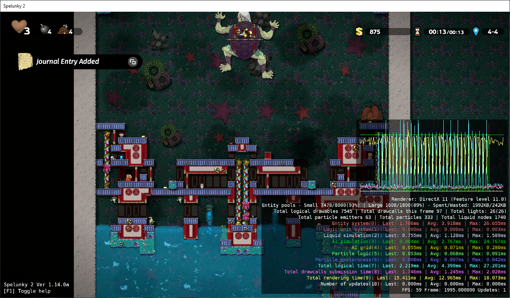
AI(AI simulation)가 플레이어로 향하는 경로를 계산할 때 성능이 하락되는 현상. 지연 시간이 ms 단위로 표시된다.
이런 종류의 레벨에서 노예들은 보스전을 방해하지 않기 위해 특별한 대우를 받기 때문에 이 특별한 경우는 특별히 걱정할 정도는 아니었지만(노예가 플레이어를 따라가는 것을 막는 것으로 충분했습니다), 플레이어의 경로 계산에 실패하면 유효한 경로를 찾기 위해 수백 개의 칸을 처리하는 문제가 발생할 수 있다는 사실이 드러났습니다.
이 문제를 해결하기 위해 저는 한 프레임에서 처리할 수 있는 칸 수를 만들었습니다. 이 제한을 초과하면 AI는 다음 경로 계산에서 유효한 경로를 찾을 수 있기를 바라며 플레이어와 가장 가까운 칸을 선택하고 그 칸으로 이동하기 시작했습니다. 따라서 최종 목표에 점차적으로 접근함으로써 AI가 목표에 도달하는 데 걸리는 시간이 개선되었습니다.
원칙적으로는 작동했지만 프레임당 처리 제한과 노예가 길을 잃을 가능성 사이의 균형을 찾을 때까지 테스트와 재테스트를 반복하는 줄다리기가 이어졌습니다. 그래서 마침내 대부분의 경우 AI가 목적지에 도달할 수 있는 수치를 찾아냈습니다.
당시 AI는 플레이어를 잃어버렸을 때 레벨의 한쪽에서 다른 쪽을 돌아다니며 플레이어를 찾는 방황 모드가 이미 있었기 때문에 이 시나리오에서는 추가 작업을 할 필요가 없었습니다.
사진으로 보면, 전체 경로가 한 번에 계산되는 이 단계를 거쳤습니다
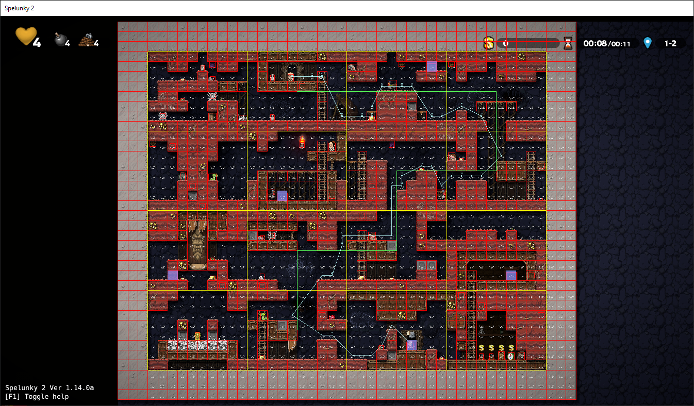
처음 몇 번의 반복에서 처리 제한을 초과했기 때문에 노예는 직접 경로를 찾을 수 있을 만큼 충분히 가까워 질 때까지 가장 가까운 위치 (하늘색 선의 끝)로 이동했습니다.
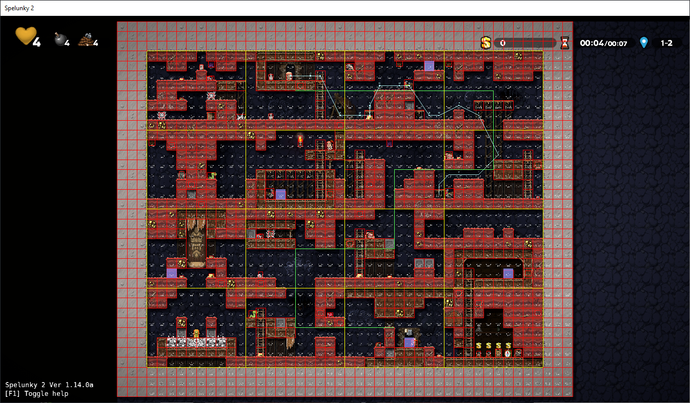
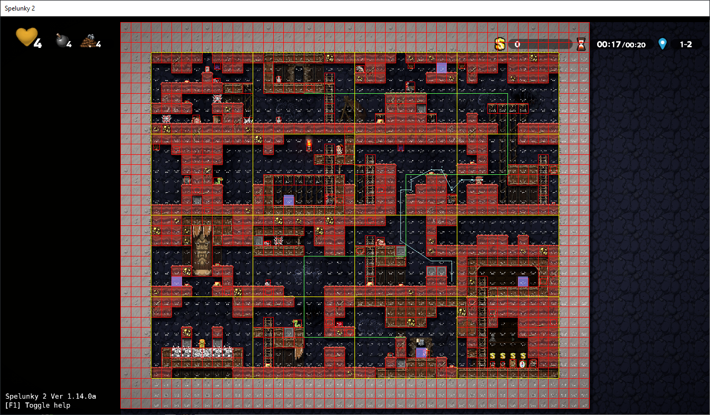
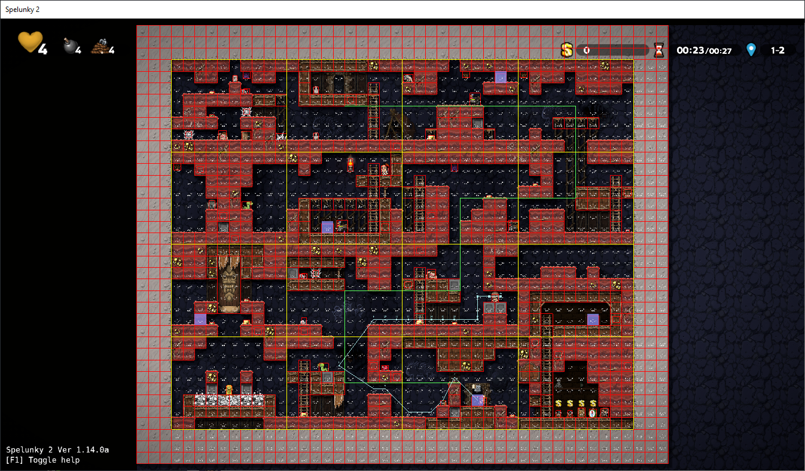
덕분에 노예들의 행동은 이전 행동과 거의 변하지 않았지만 극단적인 경우의 성능은 현저하게 향상되었습니다

변경 이후 AI(AI simulation)의 처리 성능
God bless the debug tools!: 디버깅 도구에 신의 축복을!
이러한 모든 문제와 도전에 직면했을 때 게임에는 모든 종류의 상황을 감지하고 수정하는 데 도움이 되는 다양한 도구가 있었습니다. 예를 들어 버튼을 눌러 게임을 일시 정지하여 특정 프레임의 게임 상태를 확인하고, 다른 버튼을 눌러 프레임 단위로 진행하거나 게임 속도를 높여 빠르게 이동할 수 있었습니다. 그렇기 때문에 때때로 팀원들이 "God bless [여러분이 선호하는 도구의 이름을 여기 삽입하세요]!"라고 말하는 것은 놀라운 일이 아닙니다.
우리가 개발한 모든 도구 중에서 리플레이 시스템, 자동 테스트 시스템, 디버그 레이어 등 세 가지가 AI 개발에 결정적인 역할을 했습니다.
리플레이 시스템은 게임을 플레이하는 동안 플레이어와 비플레이어 모두의 모든 입력을 각 레벨에 저장하는 시스템으로, 리플레이를 재생하면 해당 레벨에서 일어난 모든 일을 정확히 재현할 수 있었습니다. 따라서 Lollipop Robot (QA팀)의 훌륭한 동료들이 테스트 세션 중에 이상한 동작을 발견하여 리플레이를 보내주면 정확히 어떤 일이 발생했는지 확인할 수 있었고, 더 나아가 버그의 원인을 파악하고 버그가 수정된 후 실제로 수정되었는지 확인할 때까지 필요한 횟수만큼 버그를 재현할 수 있었습니다.
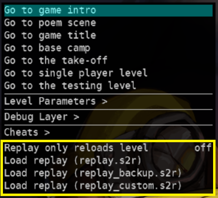
Spelunky 2팀의 개발 도구의 리플레이 옵션
반면 자동 테스트는 원래 레벨 생성 시 오류를 감지하기 위해 탄생한 기능입니다. 무작위로 레벨을 생성하고, 오류를 발견할 때까지 반복해서 점검하고, 다른 레벨로 이동하는 등의 작업을 엄청난 속도로 수행했습니다. 어느 순간 수석 프로그래머인 미키가 AI를 주인공에게 연결하여 단순히 출구 문으로 가도록 하는 아이디어를 제안했습니다. 몇 시간 후 자동 테스트가 시작되었지만 처음에는 AI가 몬스터와 싸우거나 매우 복잡한 점프를 하는 방법을 몰라 금방 죽어버리는 경향이 있었습니다. AI의 개발이 진행됨에 따라 이 자동 테스트는 점점 더 필수적인 도구가 되어, 전투 시스템이나 경로 찾기에서 오류를 감지하기 위해 AI가 레벨을 이기는 것을 여러 번 지켜보곤 했습니다(물론 터보를 켜면 아무것도 볼 수 없었기 때문에 일반 속도로 설정했습니다). 또한 자동 테스트가 단순히 레벨을 차례로 로딩하는 것이 아니라 실제로 플레이하는 '누군가'가 있었기 때문에 다른 방법으로는 재현이 거의 불가능했을 버그와 상황(예: 특정 프레임에서 특정 상황이 발생해야만 충돌이 발생하는 경우)을 발견하고 패치할 수 있었죠.

최고 속도에서의 자동 테스트
마지막으로 디버그 레이어를 통해 AI 그리드, AI가 찾은 경로, 각 노예의 상태 등 화면에 표시해야 하는 모든 종류의 정보를 추가할 수 있었습니다. 이 문서의 거의 모든 스크린샷에서 이를 확인할 수 있습니다.
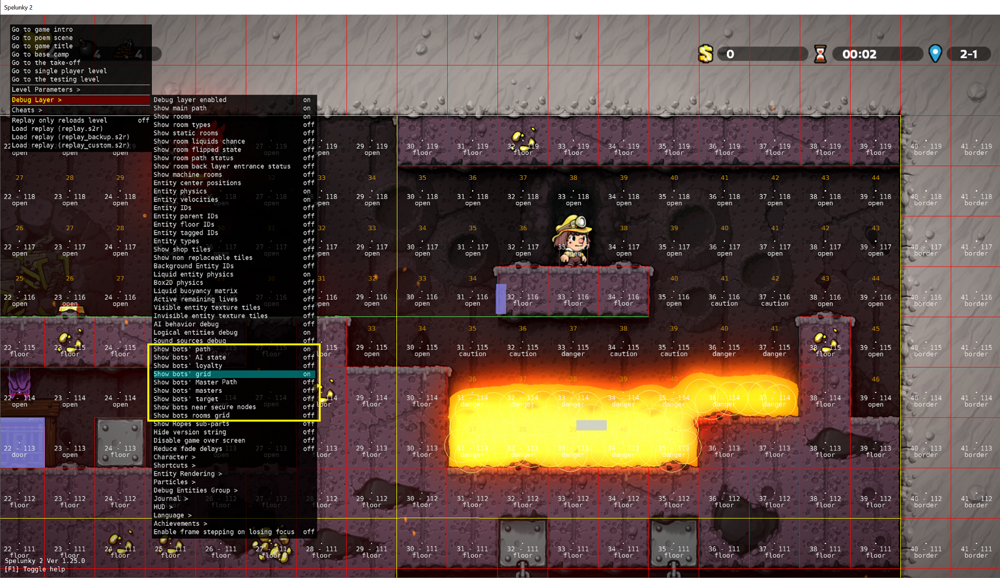
디버그 레이어에서의 AI 옵션
더 많은 도구가 있었지만, 이 세 가지 도구가 없었다면 노예의 개발은 훨씬 더 힘들고 지루했을 것입니다.
God bless them! 그들에게 신의 축복이 있기를!
There's nothing further, Your Honor: 이상입니다!
제가 AI를 개발하면서 겪은 모험과 실수들을 소개합니다. 때로는 좌절감에 울기도 하고 기쁨에 뛰기도 했지만 대부분 아주 좋은 시간을 보냈고 좋은 추억을 가지고 있습니다.

조롱하는 노예
그리고 인기 없는 의견일 수도 있지만, 저는 노예가 훌륭한 동반자라고 생각합니다. 그들은 완벽하지 않으며 (우리도 마찬가지입니다), 그들은 저를 한 번 이상 망쳤지 만, 그들의 매력은 바로 그 불완전함, 좋은 동반자와 나쁜 동반자 사이의 균형에 있다고 생각합니다: 그들은 진짜 닌자처럼 적을 제거 할 수 있습니다.
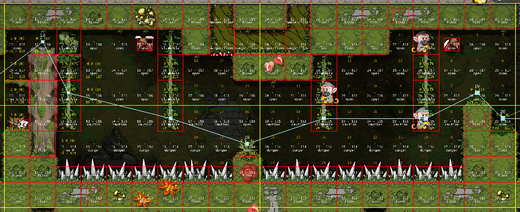
... 또는 머리에 무언가를 던지거나 (물론 항상 도와주려고 노력하지만) 결국 플레이어를 살해해 활약이 묻히게 됩니다.
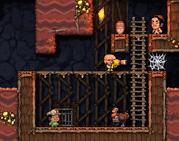
마치 다른 사람과 함께 노는 것 같습니다. 아니면 저만 그런 걸지도 모르죠. 오랜 시간 함께 지내다 보니 약점에도 불구하고 애정이 생겼을지도 모르죠. 글쎄요... 그냥 아버지의 사랑일지도 모르죠.

"읽어주셔서 감사합니다!"
2024년 9월 15일